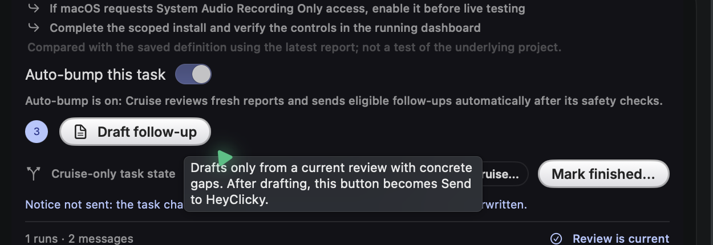

Automation
Choose Manual, Rest, or Cruise at the notch. VS Code approvals stay separately opt-in.
For HeyClicky on macOS
A calm little control room for automation, tasks, and working space.
Cruise automatically approves drive prompts. Start in Manual; use backups and a restricted environment.

The visible notice is marked “not sent”; this image does not claim delivery.
Work with HeyClicky, not around it.
Choose Manual, Rest, or Cruise at the notch. VS Code approvals stay separately opt-in.
Find jobs, set a Done goal, and compare it with the latest report. Your task order stays local.
Read-only view of local support, caches, and workspaces—with size, age, and known task links.
Cruise Control · macOS 14+
Latest version: Checking GitHub… · unsigned, not notarized; macOS may warn.
This guide follows current source; check release notes for installer-specific features.